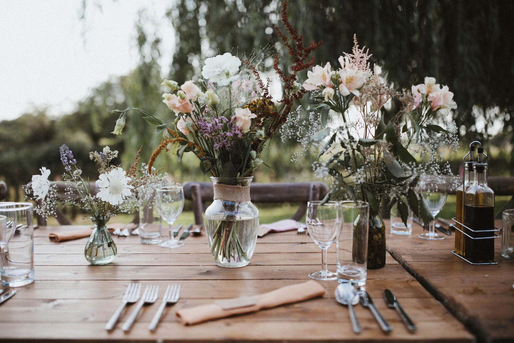
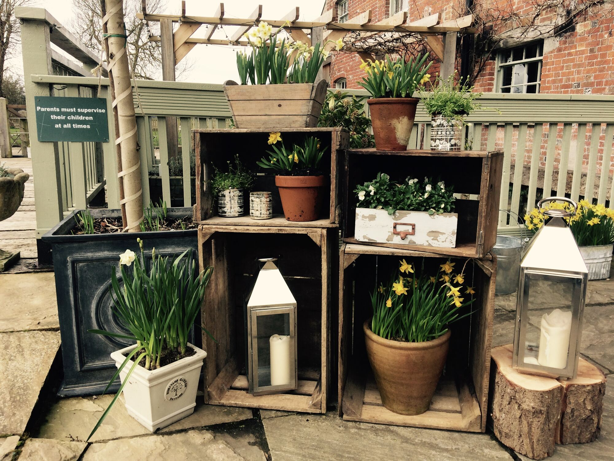

Flowers & finishing touchesfor your day at Sopley Mill
A little bit about us…
Sopley Mill's own florist & wedding hire
Home-grown flowers
Seasonal flowers and foliage, many grown by Lucy, for the freshest blooms and the best scent.
Set up before you arrive
Lucy delivers and styles everything at the Mill, then clears it away afterwards.
Living potted flowers
Hire flowers growing in pots and vintage buckets. They cost less and nothing goes to waste.
Only at Sopley Mill
Every item is chosen for the Mill's rooms, riverside and lawns, so it all fits beautifully.


Flowers
Simple, seasonal and grown close to home
Lucy loves simple, beautiful arrangements using in-season flowers, and almost every arrangement includes something home-grown. She works with your ideas and your budget, from bouquets and buttonholes to table centre pieces.


Wedding hire
Lanterns, fairy lights, props and garden games
Choose as much or as little as you like: a full decoration package for all three floors, or just a couple of apple crates. Add what you love to your list and Lucy will confirm availability and send you a quote.
Let Lucy do it all
Decoration packages
Take the stress out of doing it yourself. Lucy styles the rooms, the ceremony and your tables, using everything in the collection.
How it works
From your list to your wedding day
Build your list
Browse flowers and hire items, and tap “Add to my list” on anything you like.
Send it to Lucy
Add your wedding date and guest numbers and send your list. There's nothing to pay yet.
Get your quote
Lucy checks availability for your date and replies with a quote and any ideas.
Arrive to find it ready
Lucy sets everything up at the Mill before you arrive and collects it afterwards.
Getting married at Sopley Mill?
Inca Bella is Sopley Mill's sister company. Lucy knows every room, window and corner of the Mill, and you're welcome to see the hire collection there by arrangement.